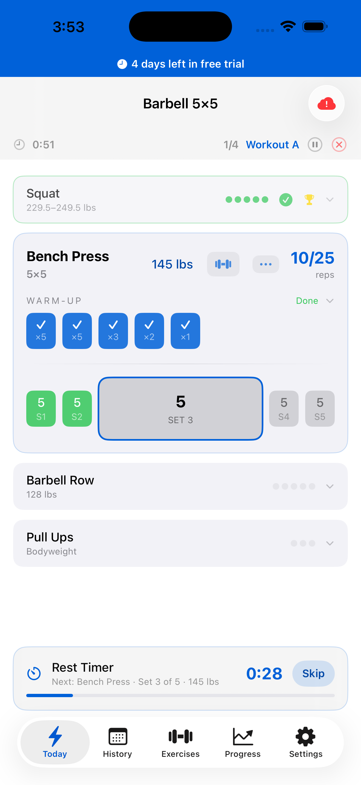
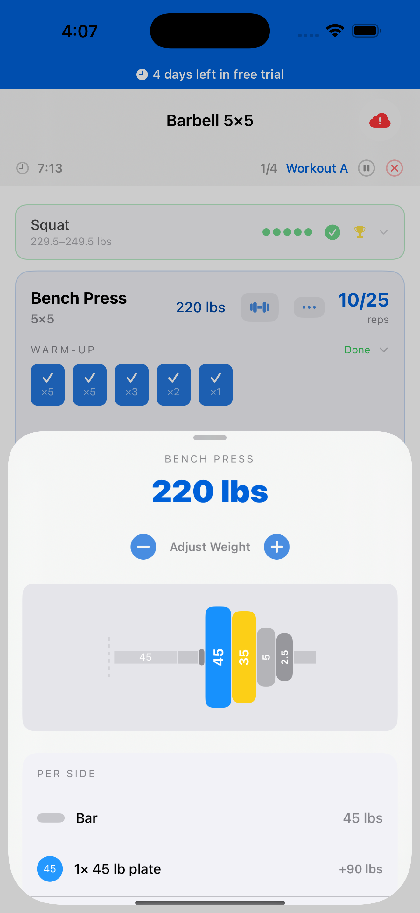
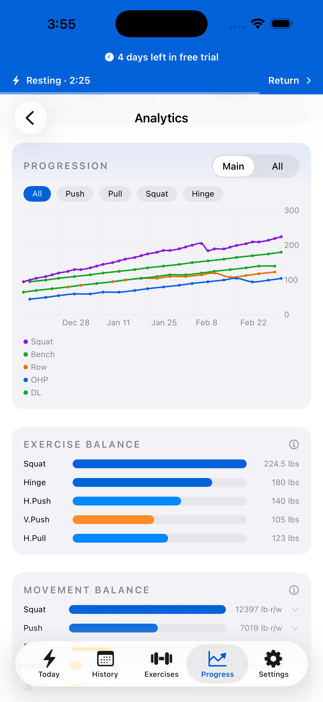
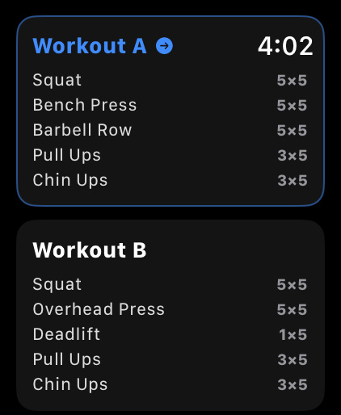
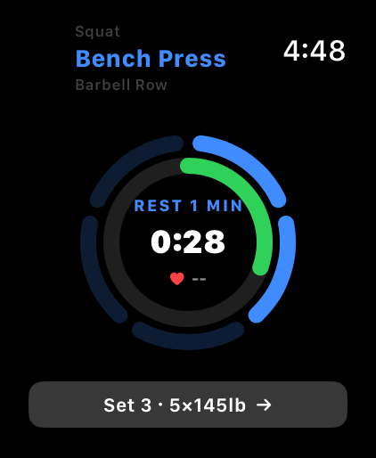
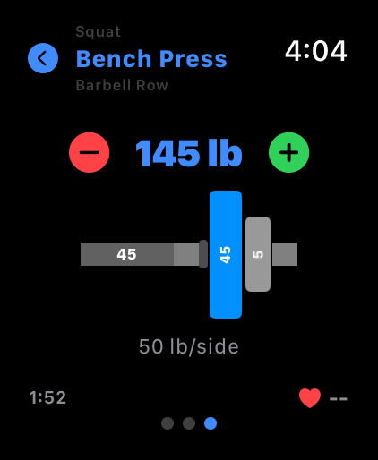

Your next workout, decided. Just show up and load the bar.
I'd been running a 5x5 barbell program for a while when the app I was using moved to a subscription model. I looked at alternatives, but everything felt cluttered—too many buttons competing for attention, no clear primary action on any screen. I figured I could build something better: an app that knows what workout you should do today, tells you exactly what weight to load, and gets out of the way.
I was already using AI to calculate a daily readiness score—weighing sleep, HRV, and training load to decide whether to push hard, deload, or do active recovery. Building that directly into the app became one of the first features that pulled the project beyond a simple tracker. From there it grew into a full-featured app with iCloud sync, Live Activities, and a standalone Apple Watch companion.



8 built-in programs, 50+ exercises, and dozens of achievement badges.
StrongLifts 5x5, Starting Strength, Madcow, Texas Method, Wendler 5/3/1, GZCLP, nSuns, Reddit PPL—plus a full custom program builder.
Reads your HealthKit data—sleep, HRV, training load—and tells you whether to push hard, deload, or rest today.
Rest timer and workout progress on the lock screen and Dynamic Island—no unlock needed between sets.
Syncs across all your devices. Works offline. Your data is never lost.
Full workouts on your wrist—no iPhone needed. Syncs every state change in real time when connected.
Automatically calculates warm-up sets based on working weight, with per-exercise configuration.
Weight progression over time, exercise balance across movement patterns, and volume tracking.
50+ exercises, each with an animated form guide showing proper technique through the full range of motion. Check form between sets without leaving the app.
A standalone watch app that tracks full workouts independently—no iPhone required. Every state change syncs in real time between devices, so you can switch mid-workout without losing a rep. It also has its own plate calculator so you know exactly what to load.



Barbell 5x5 is still in development. If you'd like to know when it launches, send me an email and I'll add you to the list.